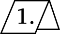

Si vous êtes un.e artiste, certaines lois sont faites spécialement pour vous. Elles permettent de contrôler les différents moyens de rendre votre œuvre publique, et peut-être même de gagner de l'argent. Elles définissent également les types de copies que vous pouvez ou ne pouvez pas utiliser dans votre processus de création. En principe, ces lois ne sont pas compliquées, mais dans le détail, c'est une toute autre histoire, laborieuse mais fascinante. Lorsque l'on regarde la manière dont les lois fonctionnent, on voit qu'elles s'accompagnent de leur propre philosophie de ce qu'est réellement la création artistique.
J'ai rédigé ce guide à l'intention des artistes au sens large du terme, pas seulement les artistes visuels, mais également les écrivain.e.s, les designer.euse.s, les photographes, ainsi que pour celles et ceux qui combinent plusieurs de ces métiers. Si vous travaillez dans la musique, le logiciel, les polices de caractères ou la performance artistique, sachez que vous ne serez pas en reste non plus. De nos jours, nombre d'artistes ne se limitent pas à un seul moyen d'expression et jonglent entre plusieurs modèles économiques, parfois en même temps. Cela peut signifier travailler seul.e, dans un collectif ou pour un studio, avec une galerie ou en ligne, sur des projets auto-initiés ou de commande. Certains de vos projets peuvent être entièrement créés de toutes pièces et d'autres peuvent être réalisés en collaboration avec des intermédiaires professionnel.le.s. Vous comprendrez comment l'application du droit d'auteur affecte toutes ces configurations. Dans la mesure où nous allons explorer la question lucrative, le principal public de ce livre est celui des créatif.ve.s professionnel.le.s. En même temps, les amateur.ice.s désireux.ses de connaître les bases des lois de propriété intellectuelle le trouveront également utile. Il fut un temps où les procès en matière de droit d'auteur se disputaient entre éditeur.ice.s, mais aujourd'hui, n'importe qui peut publier en ligne et se trouver confronté.e à un défi juridique.
Vous vous demandez sans doute comment obtenir la protection du droit d'auteur pour vos œuvres. C'est probablement plus simple que vous ne l'imaginez, car la loi vous offre de nombreux droits. Plus que jamais, en fait. Copy This Book les explique tous. Vous apprendrez ainsi comment tirer parti du droit d'auteur lors de vos négociations avec les éditeur.ice.s ou les client.e.s (c'est la « question lucrative »), mais également comment réagir lorsque quelqu'un.e copie votre œuvre sans autorisation de votre part.
Vous pouvez aussi vous demander si votre œuvre n'enfreint pas le droit d'auteur d'autrui. Où se situe la limite entre l'inspiration et le plagiat ? Le droit d'auteur, c'est assez intense. Sans doute savez-vous déjà que vous ne pouvez pas utiliser la photographie d'autrui dans le cadre de votre travail sans autorisation. Mais savez-vous qu'il vous faut une autorisation ne serait-ce que pour dessiner cette même photographie ?
Le paradoxe du droit d'auteur pour les artistes est qu'il fonctionne pour et contre vous. Vous contrôlez la distribution de votre œuvre, mais la création de cette œuvre devient plus compliquée lorsque chaque partie liée à l'œuvre d'une autre personne peut constituer une violation du droit d'auteur. Nous verrons comment le droit d'auteur fonctionne selon différents médias, toujours du point de vue de l'artiste qui l'a diffusé en premier et de celui qui veut le réutiliser. Par exemple, nous aborderons une photographie du point de vue de son/sa photographe et de celui de l'artiste visuel.le qui se l'approprie, ou encore un bâtiment du point de vue de son architecte et du ou de la photographe qui l'utilise comme arrière-plan pour une série de portraits.
Copy This Book a également un autre objectif. Aux XVIIIe et XIXe siècles, les artistes, écrivain.e.s et philosophes ont joué un rôle majeur dans la conception du droit d'auteur. Aujourd'hui, d'autres parlent en notre nom. L'image de l'artiste précaire est utilisée par l'industrie des médias pour justifier des lois toujours plus strictes. Protéger les artistes et les aider à gagner leur vie est le genre de mission noble qui peut attirer n'importe quel.le politicien.ne. Sans compter les juges. Une fois que les lois sont en place, la véritable connaissance de leur fonctionnement vient de la façon dont les décisions sont prises au tribunal. Comme vous le verrez tout au long de ce livre, les tribunaux prennent des décisions artistiques telles que : S'agit-il d'une copie accidentelle ou délibérée ? S'agit-il d'une parodie ou d'une simple imitation ? Ces personnages sont-ils fictifs ou biographiques ? Ce faisant, le pouvoir judiciaire part d'une certaine idée de ce que signifie « faire de l'art ». En tant qu'artistes, nous pouvons nous insérer dans ce processus car nous savons mieux que l'industrie ce dont nous avons besoin pour gagner notre vie. Et il n'y a aucune raison de laisser aux politicien.ne.s et aux lobbyistes le soin de conceptualiser la définition juridique de la créativité. En somme, Copy This Book vous aide à vous préparer à la participation au débat contemporain sur le droit d'auteur.
Nombre d'artistes sont allé.e.s plus loin que le débat sur le droit d'auteur et ont commencé à intervenir dans le cadre juridique autour de la création artistique en tant que partie intégrante de leur travail. Antoine Defoort crée des spectacles humoristiques qui racontent l'histoire du droit d'auteur et montrent en temps réel comment il régule la créativité. Céline Manz cherche à savoir comment l'acte de rendre public une œuvre peut influencer son statut juridique et artistique. Curateur et artiste numérique, Antonio Roberts organise des expositions collectives qui se concentrent sur des projets artistiques qui remettent en question ou transgressent les lois sur la propriété intellectuelle. Kobe Matthys organise des assemblées où des « choses » juridiquement contestées font l'objet d'un débat avec le public qui comprend des professionnel.le.s du droit invité.e.s et un public plus large. Ces pratiques artistiques sont liées au travail d'activistes comme Carl Malamud, qui crée des campagnes efficaces et humoristiques pour libérer les œuvres entrées dans le domaine public, et d'universitaires comme la juriste Andrea Wallace, qui a créé l'exposition expérimentale Display At Your Own Risk (2016), qui teste les limites des substituts numériques des œuvres du patrimoine mis à disposition par les institutions culturelles.
Au sein de la contre-culture des logiciels libres et open source un autre groupe de créateur.ice.s façonnent l’image de leur contre-culture. Des développeur.euse.s ont ainsi créé leurs propres variations du droit d'auteur afin de collaborer plus facilement ensemble. De là où j'écris, à Bruxelles, les mondes du logiciel libre et de l'art se rencontrent et se mêlent. J'ai eu la chance de collaborer avec Constant VZW, qui se situe à l'intersection de l'art, du logiciel libre et du féminisme, et avec Open Source Publishing, un collectif de graphistes travaillant exclusivement avec des logiciels open source expérimentaux.
La majeure partie des livres sur le droit d'auteur est écrite par des avocat.e.s et des juristes qui s'intéressent à l'art. En tant qu'artiste qui s'intéresse au droit, j'espère que ce livre reflète une compréhension différente et vivante de la pratique créative. Note sur la terminologie : J'utilise les termes « artiste » et « auteur.ice » comme synonymes, alors que dans la théorie juridique, le terme « artiste » désigne généralement les artistes du champ des arts de la scène.
S'il s'agissait d'un autre livre, vous pourriez sans doute lire dans les premières pages qu'il ne faut pas le copier, en tout ou en partie, suivi d'une liste variée techniques de reproduction comprenant des médias pittoresques comme les microfilms. S'il s'agissait d'un autre livre, vous devriez me demander la permission de le lire en public, d'en photocopier ou d'en scanner des parties pour les utiliser dans des articles ou des présentations, d’en photographier des extraits et les mettre en ligne, ni les stocker sur un microfilm, si c’est votre style. Mais pour Copy This Book, j'ai pris certaines mesures pour que vous puissiez faire toutes ces choses légalement. La seule chose que vous n'avez pas le droit de faire, c'est de réimprimer le livre et ensuite le vendre. Ces libertés et restrictions sont détaillées dans la licence Creative Commons Attribution - Pas d'Utilisation Commerciale appliquée à ce livre.
Aujourd'hui plus que jamais, les lois sur le droit d'auteur de la plupart des pays proviennent de nombreux traités et accords commerciaux internationaux, notamment la Convention de Berne, qui a été signée par une grande majorité des pays dans le mondePays n'ayant pas signé la Convention de Berne : Angola, Cambodge, Érythrée, Éthiopie, Îles Marshall, Îles Salomon, Irak, Iran, Maldives, Myanmar, Nauru, Ouganda, Palaos, Papouasie-Nouvelle-Guinée, Saint-Marin, Seychelles, Sierra Leone, Somalie, Taïwan et Timor oriental.. Cela signifie que les grands concepts du droit d'auteur sont presque les mêmes partout. Cela dit, beaucoup de pays ont leurs propres interprétations et lois supplémentaires au droit d'auteur. Ce livre a été écrit à Bruxelles, capitale de l'Union européenne (UE), et se concentre donc sur le concept européen, avec un accent particulier sur la Belgique, la France et les Pays-Bas. L'UE a harmonisé certains aspects du droit de la propriété intellectuelle, mais des différences persistent d'un État-membre à l'autre. Dans la mesure du possible, je les mets en lumière. Les États-Unis sont malgré tout régulièrement cités dans ces pages, car les cas américains sont très présents dans le discours autour de l’art contemporain. Pourtant, l'approche américaine diffère à plusieurs égards de celle des États-membres de l'UE. Copy This Book vous montrera dans quelle mesure. Alors qu'Internet facilite plus que jamais le travail transfrontalier, il est très probable que vous soyez confronté.e.s à différents systèmes juridiques en même temps.